Le jumeau par le demi-tour — avant / après
Écran scindé, lacet 45° B (le défaut). J2 est posé au demi-tour de J1 et vise à l'opposé : il regarde, depuis le
côté opposé, la place jumelle de celle que regarde J1. Pour chaque moitié : la prise (le décor posé), puis le décor seul en
rouge (les pixels qui changent quand on le retire, au même instant). Un décor équitable montre autant de rouge des deux
côtés. Rendu logiciel du cloud : les images valent pour le noir, les couleurs et les comptes, pas pour la cadence.
Pochoirs — J1 devant « ZONE 1 » (8, 23), J2 devant la place jumelle (23, 8) Avant (la base, 8ad6495) 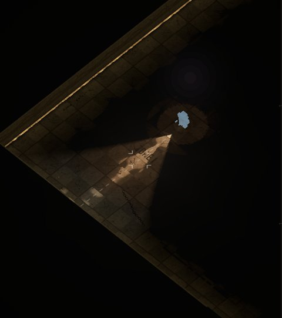
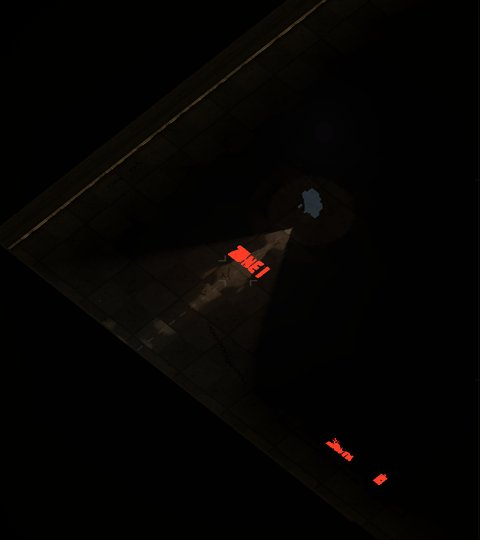
J1 (moitié gauche) — 2864 pixels de décor · bruit 0 · plus clair 0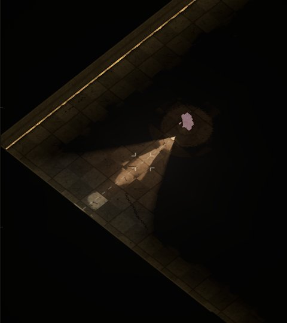
J2 (moitié droite, au demi-tour) — 0 pixels de décor · bruit 0 · plus clair 0Après (cette branche) 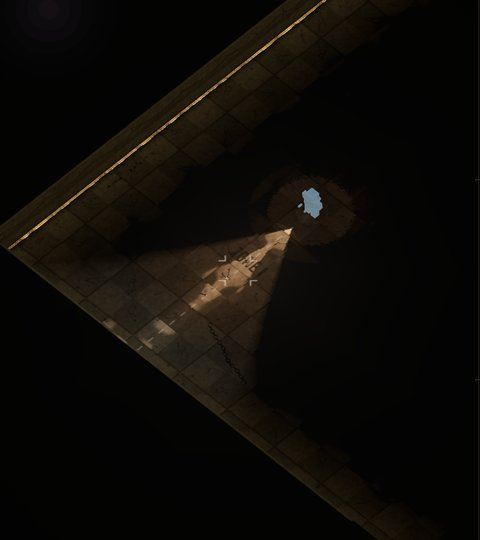
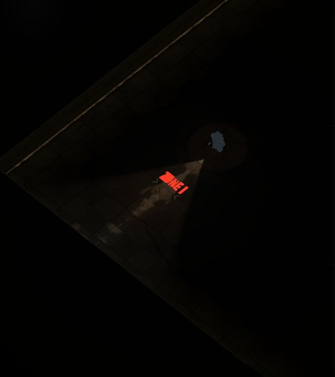
J1 (moitié gauche) — 1818 pixels de décor · bruit 0 · plus clair 0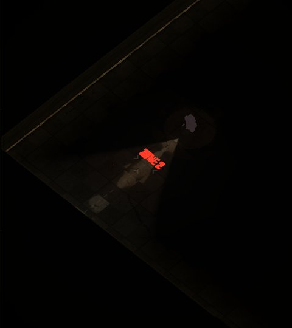
J2 (moitié droite, au demi-tour) — 2065 pixels de décor · bruit 0 · plus clair 0Sol marqué — J1 devant le cadre du « DEATHMATCH » nord (15,5, 6), J2 devant le jumeau (15,5, 25) Avant (la base, 8ad6495) 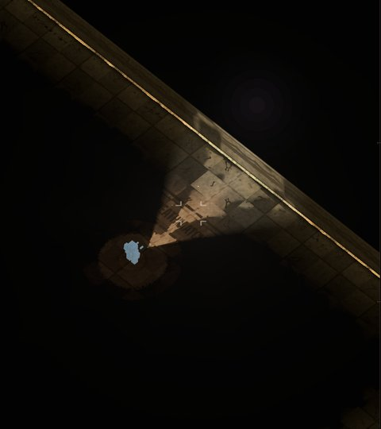
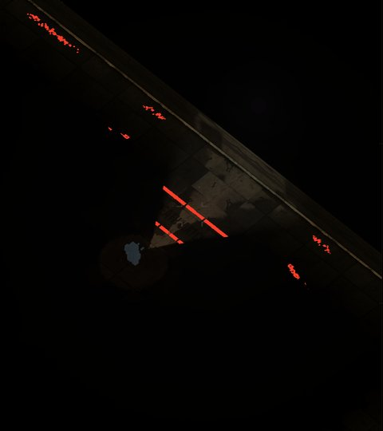
J1 (moitié gauche) — 4335 pixels de décor · bruit 0 · plus clair 0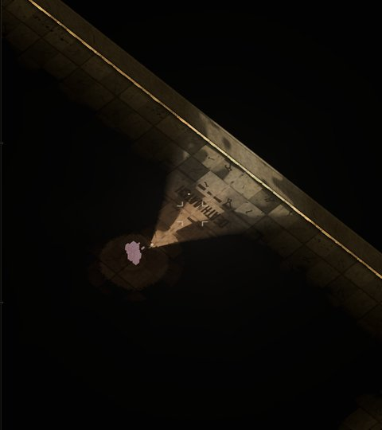
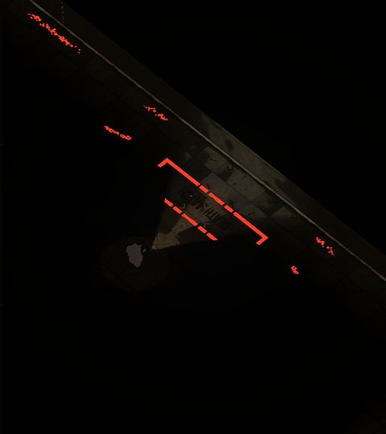
J2 (moitié droite, au demi-tour) — 6455 pixels de décor · bruit 0 · plus clair 0Après (cette branche) 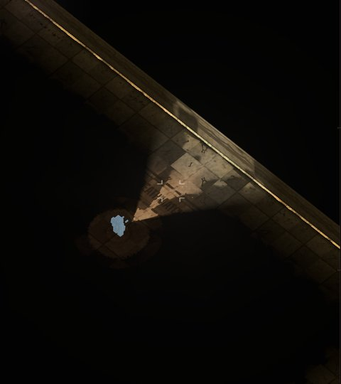
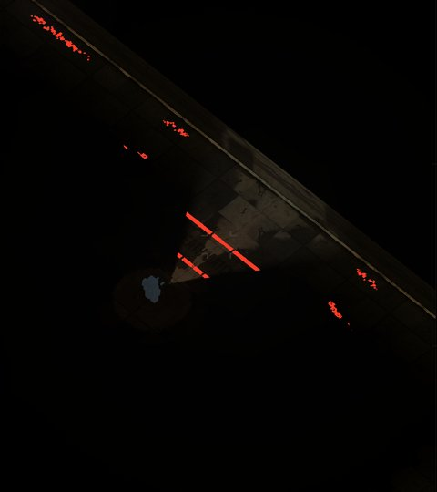
J1 (moitié gauche) — 4341 pixels de décor · bruit 0 · plus clair 0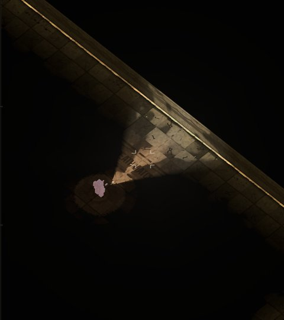
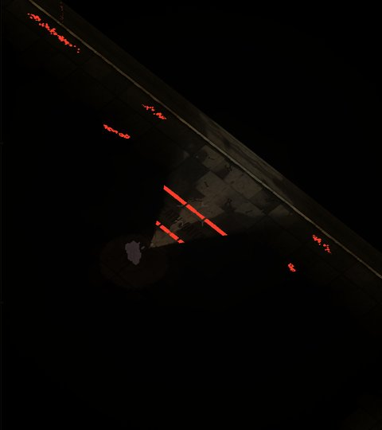
J2 (moitié droite, au demi-tour) — 4502 pixels de décor · bruit 0 · plus clair 0Tuyaux — J1 devant la face sud du mur d'enceinte nord, J2 devant la face nord du mur sud Avant (la base, 8ad6495) 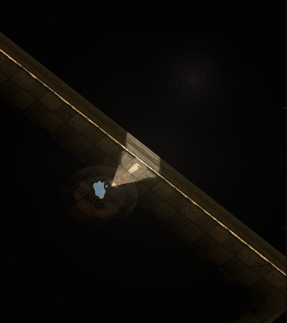
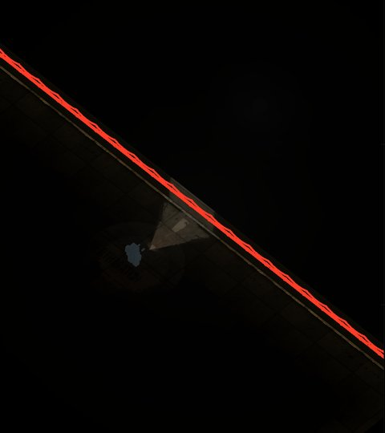
J1 (moitié gauche) — 15937 pixels de décor · bruit 0 · plus clair 85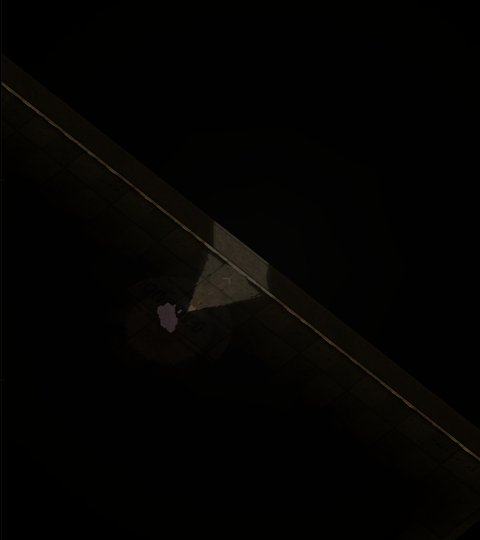
J2 (moitié droite, au demi-tour) — 0 pixels de décor · bruit 0 · plus clair 0Après (cette branche) 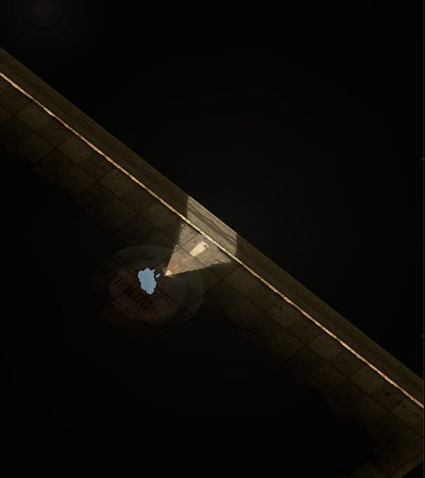
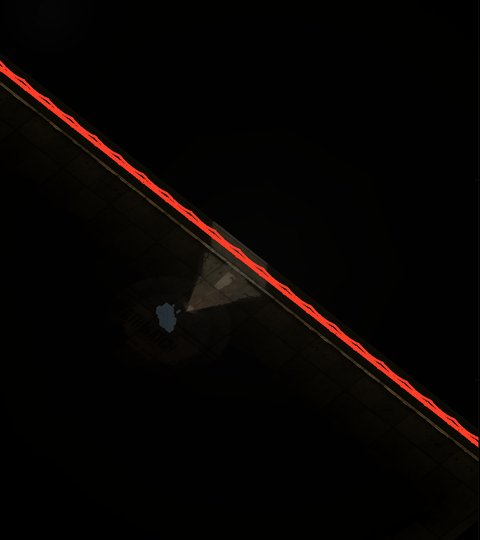
J1 (moitié gauche) — 15936 pixels de décor · bruit 0 · plus clair 83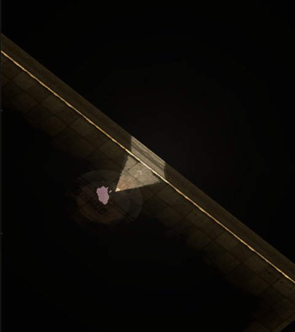
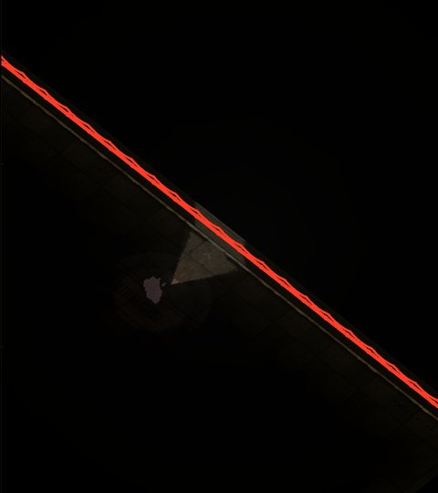
J2 (moitié droite, au demi-tour) — 15961 pixels de décor · bruit 0 · plus clair 54